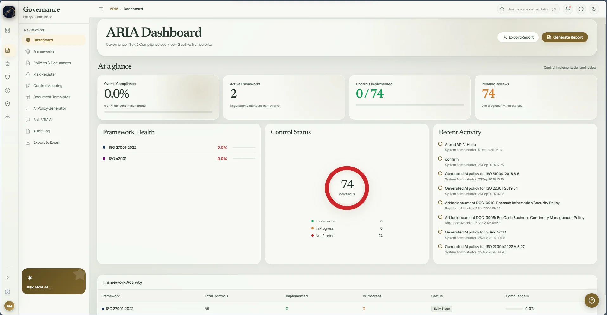
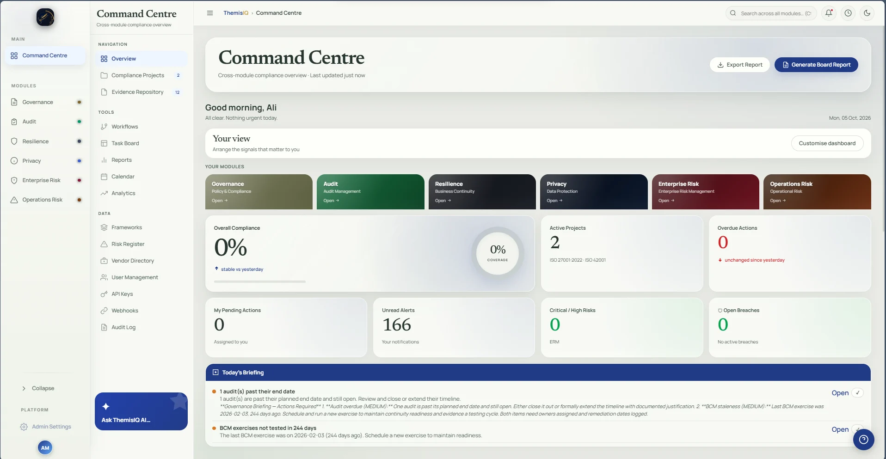

GOVERNANCE / ARIA01 / 06
Give every control its context.
Bring frameworks, policies, documents, and control work into one clear governance view.

FrameworksPolicies & documentsControl mapping
A connected home for governance, audit, resilience, privacy, and risk. Keep the right context close to every decision.
Select a module to preview its dashboard

Policies, findings, incidents, requests, and risks are easier to understand when their context stays connected.
ThemisIQ brings six disciplines into one considered workspace, with a Command Centre shaped around what each person needs to see.
Follow a signalExplore an illustrative journey from an operational event to a clearer decision. Select each stage to see the context that matters.
Capture the event, its owner, and its impact while the details are fresh.
Choose a story to explore how ThemisIQ brings context, timing, and ownership into the same view.
Pick a jurisdiction to see how the response view adapts its authority, response window, and subject-request timing.
Explore the example →Illustrative interface only. Actual notification duties depend on the event and current law.
A confirmed breach can create related work in enterprise risk, operations risk, and audit. The teams see their own next step from a shared event.
Store evidence once, link it to the work that needs it, and keep its expiry in sight. Select a link to see how one record supports different teams.
Select a linked record →Reviewers can open the supporting file from the control they are assessing.
Move a card forward or tuck one away. The overview can follow the signals each role needs to see first.
Explore how assistance, grounded answers, external signals, and predictive risk can work with the records your teams already manage.
Start from business context, linked records, and a structured template. People still review and approve the result.
An assisted starting point for processing scope, data flows, risks, safeguards, and reviewer decisions.
Illustrative document outline. Generated material requires verification and approval.
Ask ARIA uses your organisation's authorised policies, controls, and risk records to answer in business context. Select a sample question to see how it handles coverage.
What is our retention approach?
Begin with the approved retention schedule, confirm the record category and owner, then check any hold before disposal. The exact period comes from your organisation's policy.
Example conversation only. Actual answers depend on authorised records and citation coverage.
When web search is configured, ERM can scan for emerging risks, verify cited sources, and turn relevant developments into reviewable context.
Review new dependencies, supplier exposure, and control coverage against the organisation's risk register.
Illustrative themes, not a live web scan. The platform labels knowledge-only fallback when web search is unavailable.
Predictive risk intelligence combines cross-module signals, shows their contribution, and keeps confidence visible for human review.
An example of how the platform brings continuity, control, incident, and appetite signals into one reviewable picture.
Illustrative scenario values, not a forecast or live tenant data. Recommendations require validation.
Choose a discipline to see its current dashboard and the work it brings into focus.
Bring frameworks, policies, documents, and control work into one clear governance view.

A considered system gives the work room to breathe while keeping its evidence, ownership, and history close.
Evidence remains available to the teams and workflows that rely on it.
Move from a question to a useful starting point, with relevant context close at hand.
Compare baseline and scenario impact, link the affected risks and controls, and capture a board-pack snapshot.
Tell us what your team needs to connect. We will show you how ThemisIQ can support the work behind your next decision.
hello@themisiq.net